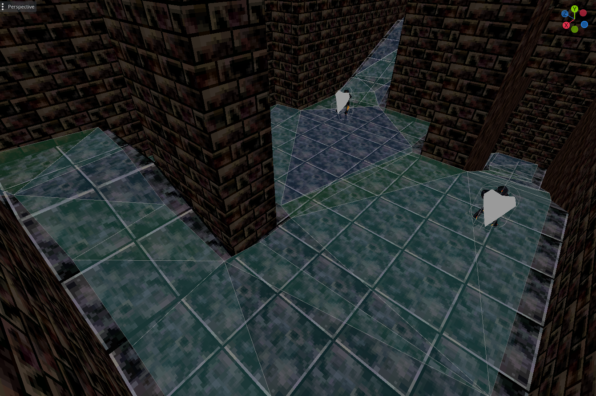

Silver Key - pathfinding
hi all,
the Silver Key prototype ive been working on for two months is out!
you can download it here: snorv.itch.io/silver-key.
the prototype contains a small section of overworld with a merchant, a small dungeon with 3 enemy types and a boss. i look forward to your feedback.
this prototype contains a lot of firsts for me. its the most fleshed out 3D character ive built, its my first time creating real-time combat in 3d, the inventory system is new, and the monster ai is more complex than any ive made before.
last month, i wrote about the state machine that manages the player. the monsters use a similar, greatly simplified state machine. this is what that looks like for basic enemies:

deceptively simple, maybe. "move to player if reachable" is a very complicated bit, it turns out. lets talk about pathfinding.
pathfinding

for my first implementation, the monsters moved on a square grid. the dungeon is built out of modular, cube-sized tiles, so i was able to pass that grid to the monsters in order for them to know which tiles around them were walkable. using that grid, they i programmed them with an A* search. in brief, A* is the name of a search method which prioritizes looking at locations with the smallest direct distance to the target. it starts by combing through every tile the monster can reach and assigning it a direct distance to the player. if there are no reachable tiles within melee of the player, we can assume the player is unreachable and give up.
heres the explanation of A* i referenced when building it out: A* Pathfinding (E01: algorithm explanation)
this implementation had a few problems
- the monsters could only move in eight directions. unless the monster had reached the player, they would only move between the centers of each square. as a result, movement looked very unnatural.
- monsters could not change elevation. they could only see the terrain grid for their current elevation, so if the base of a slope was on their elevation, they could climb the slope, but if the slope led to a tile on a different elevation, they would see it as empty space.
- if the grid is the only thing the monster factors in, it will collide with anything not on the grid- torches, chests, other monsters, etc. this causes monsters to get stuck endlessly walking into an object.

so what to do? the only long-term solution to #3 is to detect what the monsters will collide with. i hoped to minimize collision detection, as that can get very intensive on the cpu. if every enemy has to check every collider between themselves and the player, that could result in massive slowdown.
i mentioned last month that im working in Godot, and Godot has a useful feature for this called NavigationRegions. a NavigationRegion is an object that divides a group of colliders into triangles.
these triangles can be used for A* pathfinding in the same way you would use a square grid, with some advantages.
- since these triangles break down the space based off of adjacent colliders, they allow for much more natural movement than the grid. large, open areas will have few triangles, and monsters will move directly towards their target. small, condensed areas will have more triangles and monsters will move purposefully from triangle to triangle.
- triangles are not bound to a specific elevation. while a triangle cannot touch more than three adjacent triangles, the vertices can be anywhere in 3d space. this means that moving up and down slopes is simple.
- NavigationRegions detect colliders within its perimeter, and monsters can access which triangles are blocked when building a path. having the region track this information means that a large number of monsters can pathfind simultaneously without much stress on the system.
from there, the next important piece is behavior. melee monsters move towards the player constantly, while ranged monsters keep a safe distance. eventually, i want to explore more advanced behaviors, such as movement in formation.
Phase II?
im going to keep working on this project. the primary goal of Phase II is to expand combat. the player will have access to two new weapons in addition to the sword. each weapon will have multiple attacks. i will also refine the dodge, and i intend to make the player less clunky to control overall. to match the player’s new tools, im going to give the monsters more kinds of attacks and make them more versatile.
to support the player having multiple weapons, im going to add a gear menu. i want gear management to be a core part of the game, so Phase II will contain the minimum viable implementation of the gear system.
my target is to finish Phase II by the end of august. i will continue to post monthly updates to track my progress.
until then, if you play Silver Key, please share your thoughts. thank you for reading, and see you in june!
- ciaran